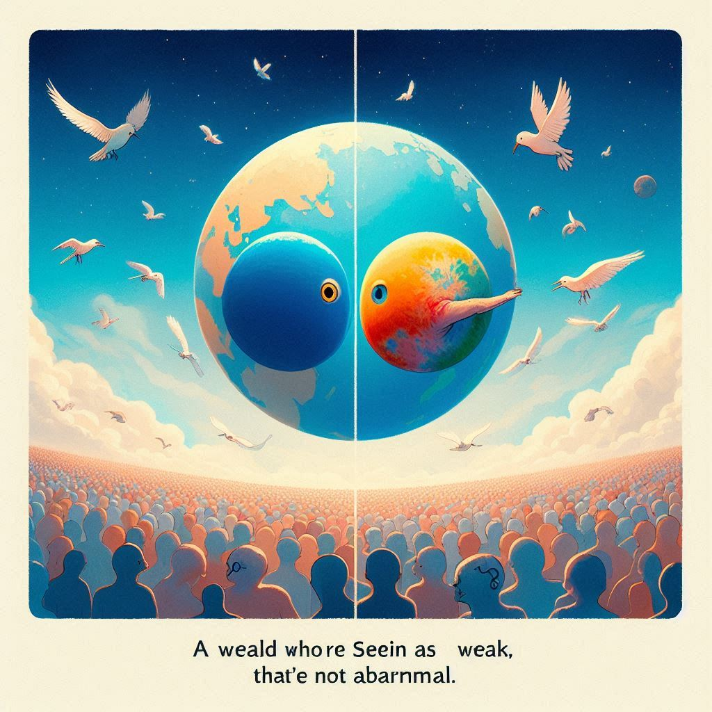

작가:구병모
출판일: 2019.03.15
감상평:
소외된 두 사람의 이야기를 다루는데 보통 차별에 관한 글은 이분법적이었지만 이 소설은 이분법적이지 않은 것이 좋았다. 약자로 보이는 세상이 무조건 이상이 존재하는 것이 아니라는 것을 알고 두 사람이 서로의 결함을 메워 주려 한다. 제목의 버드스트라이크는 작중에서 약자인 새가 억압되고 희생된다는 것도 있지만 개인적으로 이야기 초장에서 두 사람이 부딪혀 강자와 약자의 세상이 연결되어 서로 이해한다는 의미도 있지 않을까. 결말에서 날개의 도달점이 어딜지 고민하기보다 날 수 있다는 사실이 중요하다는 말이 마음에 와닿았다.
감상평에 대한 그림: 
감상평에 대한 AI 감정 평가:
"이 감상문은 차별과 약자에 대한 이야기를 단순한 이분법으로 보지 않고, 서로를 이해하며 보완해 나가는 과정에 집중한 점에서 깊은 통찰이 느껴집니다. 강자와 약자가 충돌하며 연결되는 모습에서 새로운 의미를 찾고, 비행의 가능성 자체가 중요하다는 메시지가 감동적으로 다가옵니다. 전체적으로 열린 해석과 깊이 있는 성찰이 담긴 감상문입니다.